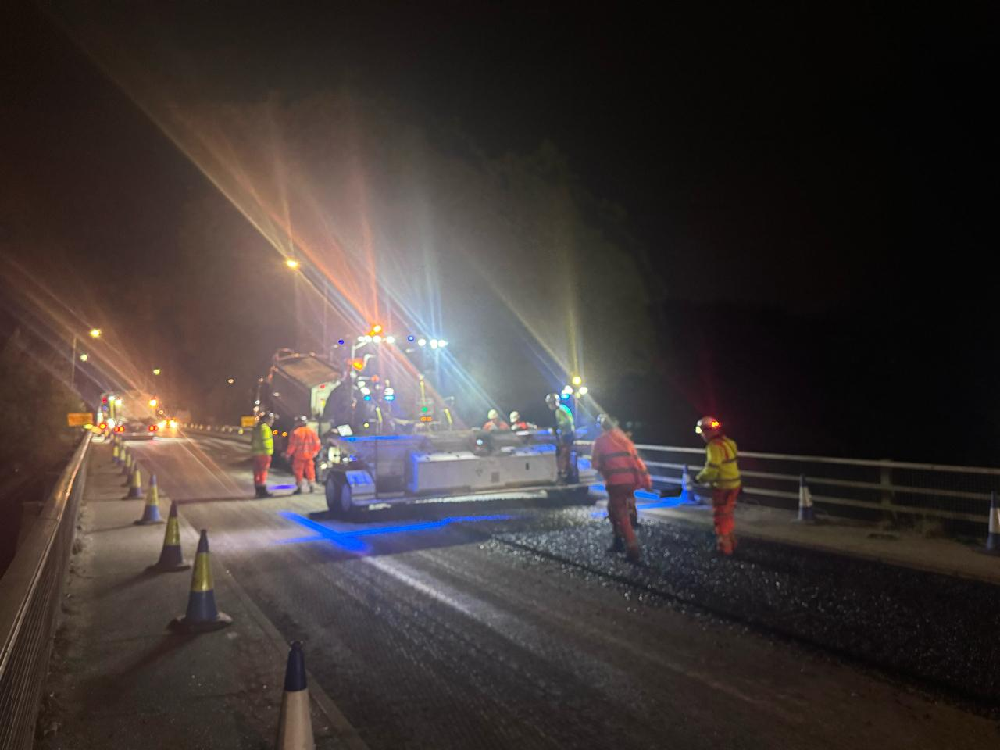
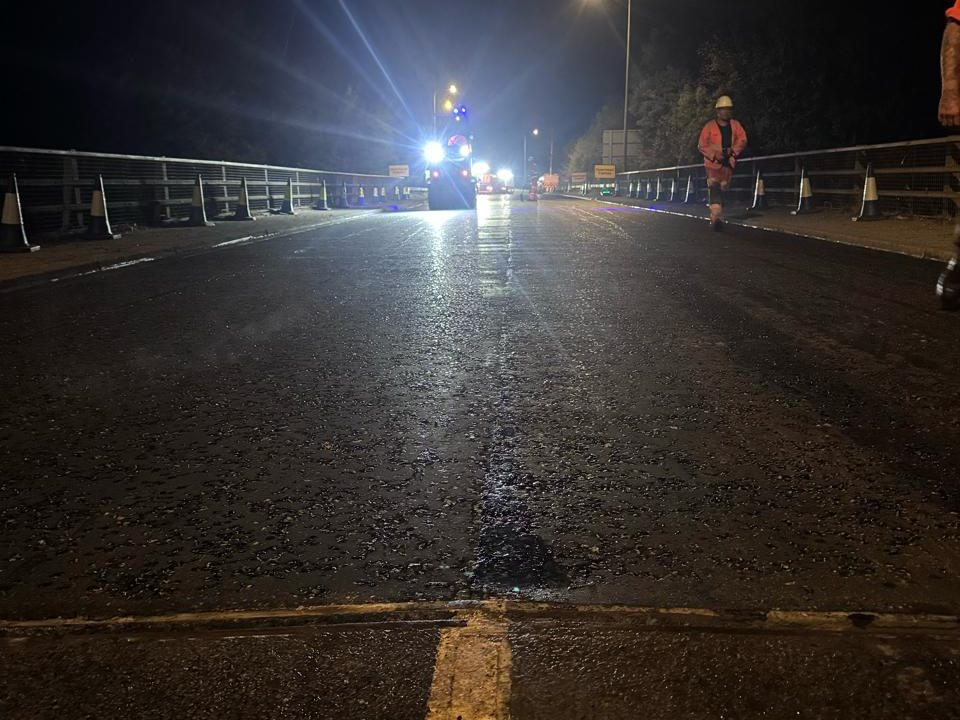
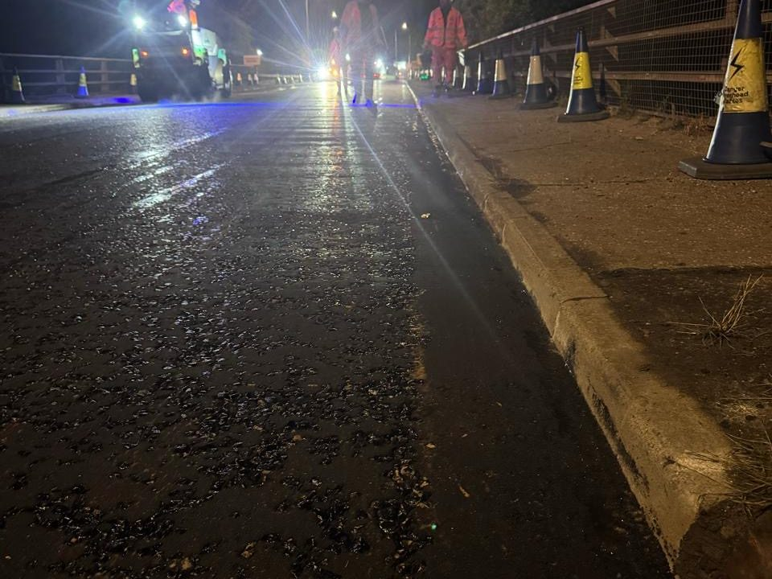

A14,
Ipswich.
A chipping gang supplied to a resurfacing scheme on a live trunk road — installing pre-coated chips into hot rolled asphalt, overnight, behind the machine gang.
Labour supply, at the sharp end.
Not every job is one we take on end to end. On the A14 at Ipswich we were brought in for one thing — to chip the surface course — and to do it at the pace a trunk-road closure demands.
Hot rolled asphalt is laid as a smooth mat, and it only becomes a road surface once pre-coated chips are rolled into it. That gives the finished carriageway its texture and its skid resistance — and it has to happen while the mat is still hot enough to take them.
That puts the chipping gang immediately behind the paver, moving at whatever rate the machine gang sets, with no scope to fall behind. Coverage has to stay even across the full width, and the rate has to hold to the specification from the first metre to the last.
The work ran overnight under full traffic management, so a strategic route stayed open to traffic through the day — and the crew handed the carriageway back each morning finished.
It's the same crew and the same accreditations we put on our own contracts. When a main contractor needs a specialist gang to slot into their programme, this is what that looks like.
At a glance
- A14, Ipswich, IP1
- Live trunk road, night works
- Pre-coated chip install
- HRA surface course
- Labour supply to a machine gang
Every operative CSCS accredited, plant operators CPCS or NPORS carded.
What we supplied.
Where our crew picked the job up, and what they were there to do.
A full chipping gang supplied to install pre-coated chips into the hot rolled asphalt surface course, working directly behind the machine gang laying it.
Chips applied while the mat was still at temperature, at the rate and coverage the specification called for — the window is short, and it doesn't wait for anybody.
Carried out overnight under full traffic management, to keep a strategic route open to traffic during the day.
Overnight on
the carriageway.
Chips going down behind the paver, and the finished surface handed back before morning.




We hire out plant
and labour.
If you're a contractor who needs accredited surfacing crews or plant to deliver your own programme, that's a service we offer in its own right — short-term hires through to long-term contracts.